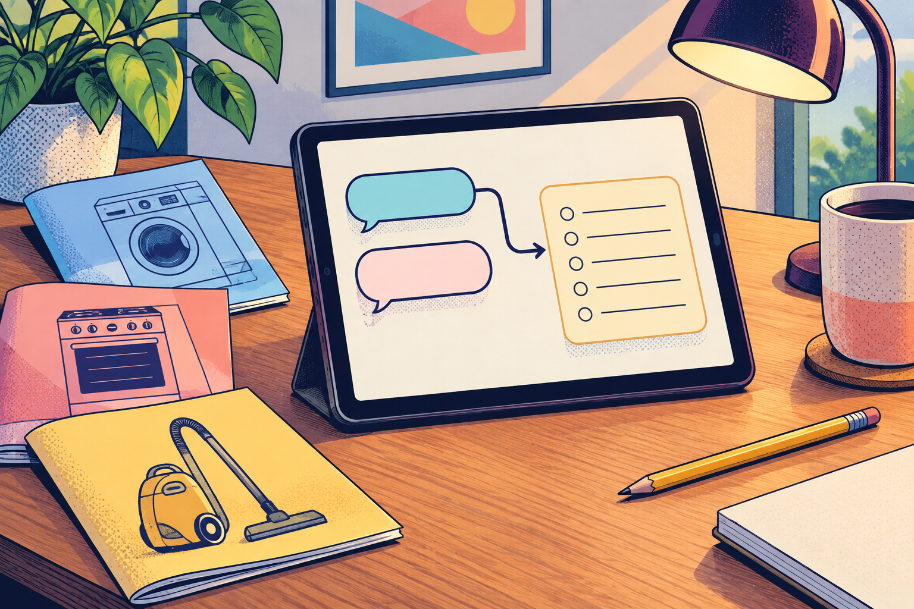

Anthropic announced September 16 that it is merging Claude chat and Cowork into one Claude experience. A person can ask a quick question or hand over a longer, multi-step task without choosing a mode first.
Rollout is gradual: Pro and Max first across web, desktop and mobile. Same-plan accounts may differ. Team and Free follow; Enterprise gets at least 30 days’ notice.
The change removes a doorway; it does not promise that every task will succeed. One conversation may answer, then use tools and several steps to produce a file.
Manual is the default and asks before actions. Auto can work with fewer check-ins. The setting covers the whole conversation, so check it before a longer task.
Once the new experience reaches your account, attach three appliance manuals and ask Claude to make an editable seasonal-maintenance checklist. Keep the conversation on Manual, name the manuals it may use and inspect every date or safety instruction against the originals.
Local folders or apps require Claude Desktop to stay open; a cloud task may continue after you close the laptop. Separate Chat and Cowork choices mean your account has not moved yet.
“Claude is removing the mode choice, not the need to choose permissions.”
Background: Working with AI 101 — Add to Your Working With AI Kit shows how to write one authority line: what an agent may do, when it must ask and when it must stop.